<ion-content>
  <ion-fab  vertical="top" horizontal="start"  slot="fixed" (click)="beforePage()">
    <ion-fab-button mode="ios" size="small" translucent    color="motel"  style="  outline: none !important;    ">
      <ion-icon name="arrow-back-outline" style="color:#f8d100;"></ion-icon>
    </ion-fab-button>
  </ion-fab>
<div style="padding:1em">
  
  <h2>Selecciona una unidad de medida</h2>

  <h3 style="margin-left:.5em;">Longitud</h3>
  <ion-item (click)="changeDistance('km')" >
    <ion-label [ngClass]="{'select' : selectDistance == 'km' }">Kilometros</ion-label>
  </ion-item>

  <ion-item (click)="changeDistance('mi')" >
    <ion-label [ngClass]="{'select' : selectDistance == 'mi' }">Millas</ion-label>
  </ion-item>

  <h3 style="margin-left:.5em;margin-top:2em">Masa</h3>
  <ion-item (click)="changeMass('kg')" >
    <ion-label [ngClass]="{'select' : selectMass == 'kg' }">Kilogramos</ion-label>
  </ion-item>

  <ion-item (click)="changeMass('lb')" >
    <ion-label [ngClass]="{'select' : selectMass == 'lb' }">Libras</ion-label>
  </ion-item>


</div>

</ion-content>
